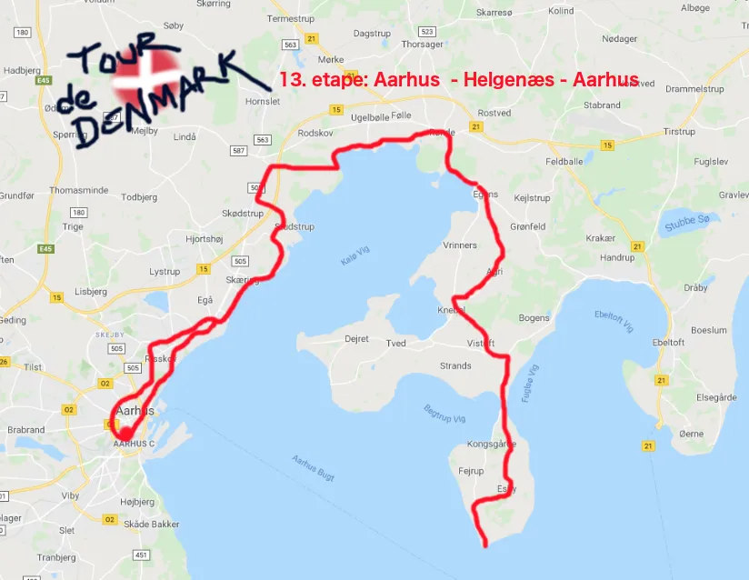

13. etape: Aarhus – Helgenæs – Aarhus og diskvalifikation

Der var storm over 13. etape, der var på 130 km fra Aarhus til Helgenæs og retur til Aarhus. Det blev en lunefuld affære med diskvalifikation og hård vind fra stort set alle retninger – og et felt, der udover Squadra Molteni, lå spredt ud over Mols bakkede bjerge. 

Kort før starten på dagens etape, bliver Morten Mejsen diskvalificeret af UCI. En lille mand i en utrolig grim vindjakke med UCI-logo på brystet, kommer nærmest vraltende hen til Morten Mejsen med et dokument i hånden. UCI-manden siger en masse på fransk, som Morten modtager med himmelvendte øjne og en masse franske bandeord. Optrinet giver naturligvis giver lidt muren i krogene i feltet – dét gør franske bandeord jo nu engang.

Men løbet bliver flaget i gang kl 09.00 – uden Morten Mejsen i feltet. Han er allerede på vej ind i det ikoniske brune værtshus Bro Caféen, hvor han allerede i døren bestiller en flaske Pernod.
Da feltet kommer fri af Aarhus, bliver det ramt af det danske sommervejr, der i øjeblikket viser sig så lunefuldt som april, og så blæsende som på en oktoberdag. Men der forhindrede ikke Squadra Molteni i at angribe i højre og venstre. Efter godt 25 km har hele Squadra Moltenis mandskab er hul til feltet på over 7 minutter. Feltet er måske så meget sagt – der er nærmere tale om enkeltryttere, der lå spredt ud over Mols bakkede bjerge.
Selvom dagens etape var en voldsom blæsende affære, så viste den endnu engang et hjørne af Danmark fra sin smukkeste side: smalle krøllede sogneveje og idylliske landsbyer. Små perler på Mols: Egens, Agri, Knebel og Kongsgårde. Landsbyer, der alle er som klippet ud af en Morten Korch film.
På vejen retur mod Århus, hvor triptælleren har rundet de 110 km, er Svend Seegerts store dieselmotor først ved at være oppe i optimal drifttemperatur – hvorfor han stikker fra resten Squadra Molteni gruppen.
Svend har det med, at han gerne vil overholde sin plan. Han sagde allerede inden starten på dagen etape, at han havde tænkt sig, at køre de 130 km på 4 timer rent. Og når Svend indstiller dieselmotoren til dét, så kan man godt stille uret efter ham.
Svend kører i mål i tiden 4:00:01 – godt 2 minutter foran resten af Squadra Moltenis hold.
Forza Svend “Omega” Seegert
Forza Molteni
13. etape: Aarhus – Helgenæs – Aarhus
1. Svend Seegert, Squadra Molteni
Klassement:
1. Svend Seegert, Squadra Molteni
2. Kristian Blume, Squadra Molteni
3. Niels Bjørnsteen, Squadra Molteni
4. Jeppe Thiemer, Squadra Molteni
5. Jens Langergaard, Squadra Molteni
6. Grane Wunderbein Maaløe, Squadra Molteni
7. Jens Stærk Bojesen, Squadra Molteni
8. Lars Munch Larsen, Squadra Molteni
9. Per Sandahl, Squadra Molteni
DQ Morten Mejsen, Peugeot Re-Cycled
Hviledags-klassement:
1. Pelle Clemmesen, Peugeot Re-Cycled
Hold:
1. Squadra Molteni
2. Peugeot Re-Cycled